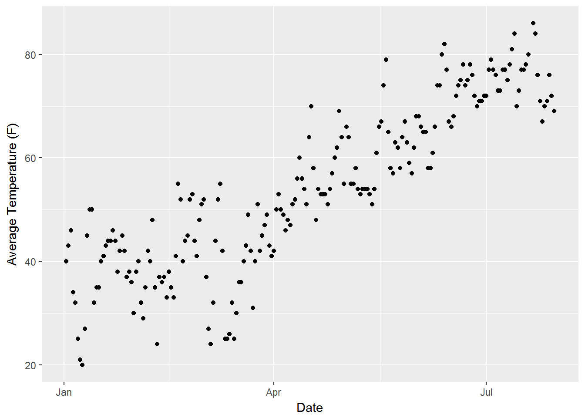
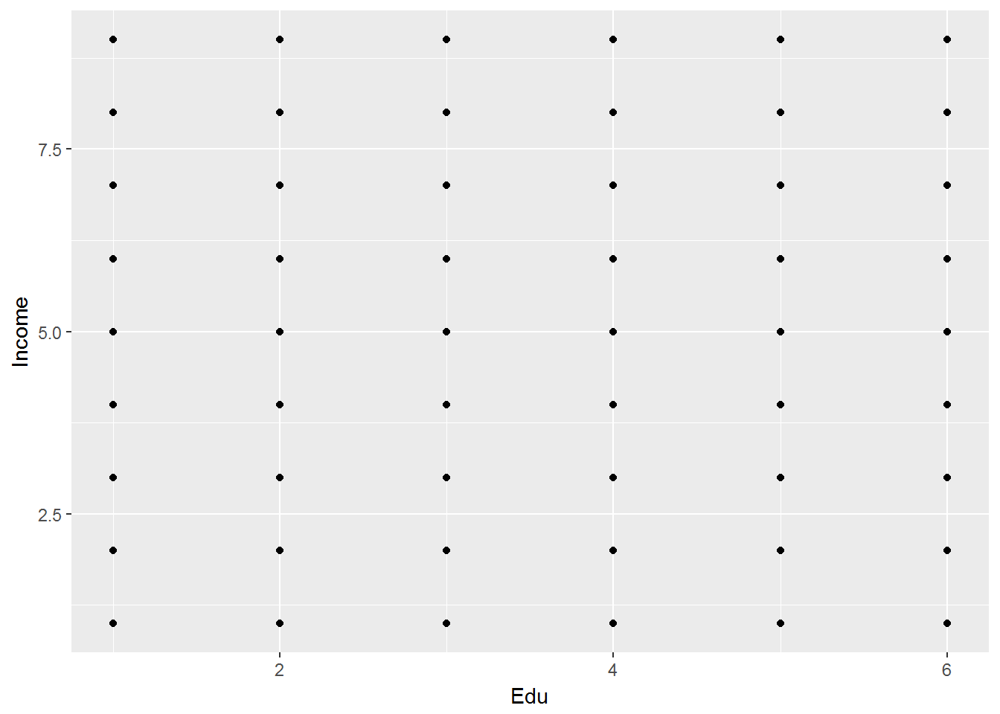

2 Simple Linear Regression
2.1 Overview
Almst all supervised models relate one or more input variables, \(X_1,X_2, \ldots , X_p\), to an output variable, \(Y\), which can be generalized as \[Y = f(X)\]. The goal of these models is to estimate the function \(f(X)\) with as much accuracy as possible. In a linear regression model, the assumption is that the input variables are related to the output variables through a linear combination, i.e., addition. The term regression refers to the fact that the output variable can take on any value. This is in contrast to classification models in which the output variable can take on one of a limited set of values. Classification models will be discussed in chapter NEED CHAPTER NAME. When the model is estimating the function for only a single input variable, it is termed simple linear regression and takes the form
\[\begin{equation} Y = a_0 + a_1X \tag{2.1} \end{equation}\]This equation might seem somewhat familiar to you, and by just replacing the letters used for the terms and switching around the order I end up with an equation which we all have encountered in grade school as the equation for a line
\[\begin{equation} y = mx + b \end{equation}\]Who knew we were all doing a form of linear regression so many years ago. Even though the letters used for simple linear regression are different they have the same meaning. \(a_0\) is the intercept and \(a_1\) is the slope of the line. However, unlike in math class where the line perfectly fit the points we were given, when dealing with data points in the real world this is almost never true. This is the reason that I keep using the word estimate. The model might be close but there should always be the expectation that it will not prefectly fit the data. Additionally, if you try to perfectly fit the data you run the risk of overfitting your model, a topic which will be discussed in chapter NEED CHAPTER NAME. So when discussing models applied to real world data the equation for simple linear regression is often written as
\[\begin{equation} Y \approx a_0 + a_1 X \tag{2.2} \end{equation}\]To understand why equation (2.2) is more appropriate than equation (2.1), let’s look at some data. Plotted in the figure below are average temperature readings at JFK airport from January through July of 2017.

Using the least squares method described below I can estimate the linear regression coefficients and overlay the best fit line.

You can see that there is no straight line which would hit all the points, so going back to my original assertion, even the most accurate model could only approximate the output variable given the input variables.
Taking another step back, we have to remember that linear regression is a method of estimating the efficients of equation (2.2), which I can represent by giving the estimated coefficients and estimate output variables tiny hats.
\[\begin{equation} \hat{Y} = \hat{a}_0 + \hat{a}_1 X \tag{2.3} \end{equation}\]2.2 Estimating the Coefficients
2.2.1 Least squares
The general idea of the least squares method is that you want to pick coefficents which minimize the differences between the given output and the output calculated from the right hand side of equation (2.3). This difference between the calculated output variable and the actual output variable is called the residual which is represented by the symbol \(e\).
\[\begin{equation} e = Y-\hat{Y} = Y - \left(\hat{a}_0 + \hat{a}_1 X\right) \tag{2.4} \end{equation}\]The residuals in our previous plot are the distances from the points to the fitted line.

If I then take the square of the residual for each observation and sum them all together I get the residual sum of squares (RSS). Minimizing the RSS is what makes this process “least squares”.
\[\begin{equation} RSS = e_1^2 + e_2^2 + \ldots + e_n^2 = \sum\limits_{i=1}^n e_i^2 \tag{2.5} \end{equation}\]\(e_i\) represents the \(i\)th residual and refers to the difference between the \(i\)th actual output, \(Y_i\), and the \(i\)th predicted output, \(\hat{Y}_i\). In the following section I am going to go, step by step, through two different methods of deriving the least squares coefficients. I find derivations useful for two reaons. The first is that they let you know where the equations come from. If you are reading this book then you are looking to understand modeling on a level deeper than simply, “how do I apply a certain model to my data”. The second reason that I like derivations is that you see the assumptions made in the derivations. This, in my opinion, is essential to being able to smartly use the different models, as you understand when the assumptions are valid and when they are not.
There are multiple methods to solve for the minimum least squares coefficients, most dealing with variations on ordinary least squares using matrix algebra. The first derivation, which I think is the simpler one, requires knowledge of partial derivatives and unlike the second derivation does not rely on linear algebra.
Derivation 1
Before I start working through the derivation, I want to go through a few simpler relationships which will come back later in the derivation.
\[\begin{equation} \begin{split} \frac{1}{N}\sum\limits_{i=1}^N y_i & = \bar{y} \Longleftrightarrow \sum\limits_{i=1}^N y_i & = N\bar{y} \\ \frac{1}{N}\sum\limits_{i=1}^N x_i & = \bar{x} \Longleftrightarrow \sum\limits_{i=1}^N x_i & = N\bar{x} \\ \end{split} \tag{2.6} \end{equation}\]Equation (2.6), which is relatively straightfoward but also allows me to introduce new notation. The left side states that the sum of all values of variable divided by the number of samples, \(N\), is equal to its mean value, as represented by a bar over the variable. The right hand side simply moves the \(N\) to the right hand side of the equation.
\[\begin{align} \sum\limits_{i=1}^N (x_i-\bar{x})(y_i - \bar{y}) &= \sum\limits_{i=1}^N x_iy_i - \sum\limits_{i=1}^N \bar{x}y_i - \sum\limits_{i=1}^N \bar{y}x_i + \sum\limits_{i=1}^N\bar{x}\bar{y}\\ &=\sum\limits_{i=1}^N x_iy_i - \bar{x}\sum\limits_{i=1}^N y_i - \bar{y} \sum\limits_{i=1}^N x_i + \bar{x}\bar{y}\sum\limits_{i=1}^N 1 \end{align}\]If you remember back from your high school and college math classes, when we are trying to find the minimum value of a function we take the derivative, set it equal to zero and solve for the parameter(s) of interest. Thankfully, the process hasn’t changed since then. Also since there are multiple parameters of interest, i.e., \(\hat{a_0}\) and \(\hat{a_1}\), I will need to use partial derivatives. First I want to rewrite equation (2.5) in a slightly more derivative friendly way.
\[\begin{equation} S = \sum\limits_{i=1}^n y_i - \left(\hat{a}_0 + \hat{a}_1 x_i \right)^2 \tag{2.5} \end{equation}\]Starting with \(\hat{a_1}\).
\[\begin{align} \frac{\partial S}{\partial \hat{a}_1} = \frac{\partial}{\partial \hat{a}_1} &\sum\limits_{i=1}^n y_i - \left(\hat{a}_0 + \hat{a}_1 x_i \right)^2 \\ = &\sum\limits_{i=1}^n 2x_i\left(\hat{a}_0 + \hat{a}_1 x_i \right) \tag{2.7} \\ &\sum\limits_{i=1}^n x_i\left(\hat{a}_0 + \hat{a}_1 x_i \right) = 0 \tag{2.8} \\ \end{align}\]Because summation is just a linear operation I can take the derivative of what’s inside the summation symbol without a problem. I got equation (2.7) through, effectively, the chain rule of derivatives. Now I can set it equal to zero, ignoring any constants on the way, and this gives me equation (2.8), the first of my ordinary least squares equations.
To acutally estimate the coefficients I can take the partial derivative of the RSS with respect to \(\hat{a}_1\), set it equal to zero and then solve for \(\hat{a}_1\).
\[\begin{equation} \hat{a}_1 = \dfrac{\sum\limits_{i=1}^n\left(x_{1,i}-\bar{X_1}\right)\left(y_{i}-\bar{Y}\right)}{\sum\limits_{i=1}^n\left(x_{1,i}-\bar{X_1}\right)^2} \tag{2.9} \end{equation}\]\(\bar{X_1}\) and \(\bar{Y}\) refer to the average input variable and average output variable, respectively. Once I have solved for the coefficient \(a_1\), I can use it to solve for the intercept, \(a_0\) as follows
\[\begin{equation} \hat{a}_0 = \bar{Y} - \hat{a}_1\bar{X} \tag{2.10} \end{equation}\]2.3 Model Accuracy
2.3.1 Accuracy of the Coefficients
While the ability to estimate the coefficients is very powerful, the question is how accurate is the estimation. You can see from equations (2.9) and (2.10) that the least squares method of linear regression will always give an estimate
When more input variables are added the simple part of the term is dropped and it is referred to as general regression and takes the form
\[\begin{equation} Y = a_0 + a_1\cdot X_1 + a_2\cdot X_2 + \ldots a_p\cdot X_p + \epsilon = a_0 + \sum\limits_{i=1}^p(a_i\cdot X_i) + \epsilon \tag{2.11} \end{equation}\]Just as in simple linear regression, the \(a\)’s in front of the input variables control the slope of the line, \(a_0\) controls the intercept of the line. Taken together the \(a\)’s are referred to as the coefficients. \(\epsilon\) is the error as measured by the distance from the points on the right hand side to the true values on the left hand side of the equation.
Going back to our original simple linear regression problem involving temperature measurments. Since we know that the relationship between the input and output variables is not strictly goverened by the equation \(F = \dfrac{9}{5}\cdot C + 32\), we need a method of determining the coefficients which actually govern the relationship between our given input and outputs.
2.4 Variable parameters
The values of the input and output parameters in a linear regression model are as follows. - Input Values can be any of the following - numerical values, also referred to as quantitative values - Dummy va
You can label chapter and section titles using {#label} after them, e.g., we can reference Chapter ??. If you do not manually label them, there will be automatic labels anyway, e.g., Chapter ??.
Figures and tables with captions will be placed in figure and table environments, respectively.
Reference a figure by its code chunk label with the fig: prefix, e.g., see Figure ??. Similarly, you can reference tables generated from knitr::kable(), e.g., see Table ??.
You can write citations, too. For example, we are using the bookdown package [@R-bookdown] in this sample book, which was built on top of R Markdown and knitr [@xie2015].